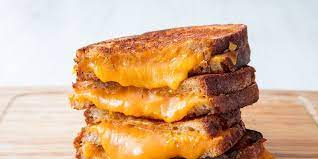

Odin Recipes
Grilles Cheese

The nice and spicy grilled cheese
Grilled cheese with onions, tomatoes, and jalapenos!
Ingredients
- 2 tablespoons butter or margarine
- 4 slices white bread
- 2 slices American cheese
- 1 jalapeno pepper, chopped
Steps
- Spread butter on bread
- Heat the pan until warm
- Put bread on pan and put the cheese on the bread
- Throw whatever you want on it then put the other slice of bread on top
- Cool until both sides are golden brown
- Enjoy!
Lasagna

Do you like garfield? You'll love this lasagna!
Lots of cheese and sauce! What's not to like!
- 1 package of lasagna noodles
- 1 pound ground beef
- 16 ounces spaghetti sauce
- 1 clove garlic, minced
- 1/2 pound shredded mozzarella cheese
- 1/2 pound shredded cheddar cheese
- Boil some water in a pot and add the pasta and cook for 10 min.
- Preheat over to 350 degrees F.
- Throw everything on a pan and toss it in the oven for 1 hour.
- Bake until cheese is brown.
- Enjoy!
BreakfastBurrito

Do you hate feeling hungry? This breakfast burrito will fill you up in a jiffy!
Sausage, eggs, and cheese! A balanced breakfast, don't you agree?
- Sausage
- 2 eggs
- 1/4 pound of chedder cheese
- Tortilla shell
- Cook sausage first
- Scramble the eggs
- Place the shell in the pan and toss everything on top including the cheeder cheese
- Roll it up and serve
- Enjoy!